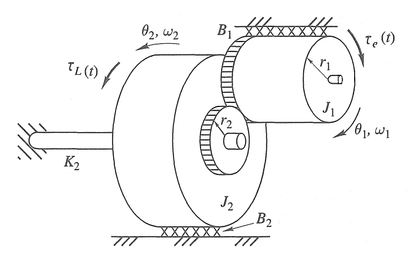
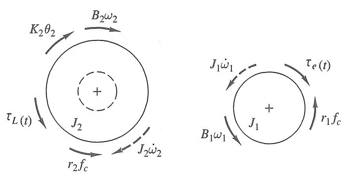

Versión PDF/HTML. Código fuente en LaTex disponible en GitHub.
Introducción
El objetivo es modelar la dinámica de un motor DC de servomotor con tren de engranajes, Fig. 1, y deducir dos puntos de equilibrio.

Fig.1 - Motor DC de servomotor con tren de engranajes.
Análisis del Diagrama de Cuerpo Libre
El sistema se puede descomponer en dos secciones: una mecánica rotacional y una electromecánica. La mecánica rotacional se puede derivar de la siguiente manera,

Fig.2 - Diagrama de cuerpo libre mecánico rotacional.
donde $\theta$ es el desplazamiento angular, $\omega$ es la velocidad angular, $B$ es el coeficiente de amortiguamiento viscoso rotacional, $K$ es el coeficiente de rigidez, $J$ es el momento de inercia, $f_c$ es la fuerza de contacto entre dos engranajes y $r$ es el radio del engranaje.
La sección electromecánica (motor DC) es
Fig.3 - Diagrama de cuerpo libre electromecánico.
donde $R_F$ es la resistencia del campo, $L_F$ es la inductancia del campo, $E_F$ es la tensión de campo constante aplicada, e $i_F$ es la corriente de campo de entrada. $R_A$ es la resistencia estacionaria, $L_A$ es la inductancia estacionaria, y $e_m$ es la tensión inducida, $i_A$ es la corriente estacionaria de entrada, y $e_i(t)$ es la tensión de armadura aplicada, y $\tau_e$ es el par electromecánico que impulsa el rotor.
s
\begin{align}
\tau_e & = \mathcal{B} l a~i_A \nonumber \\
\tau_e & = \frac{l a}{A} \phi(i_F) i_A \label{eq:tau_e}
\end{align}
donde $\phi(i_F)$ es el flujo inducido por $i_F$, $A$ es el área transversal de la trayectoria de flujo en la brecha de aire entre el rotor y el estator, $l$ es la longitud total de los conductores de la armadura dentro del campo magnético, y $a$ es el radio de la armadura.
Además, la tensión inducida en la armadura $e_m$ puede escribirse como
donde $\tau_{all}$ son los torques que actúan sobre un cuerpo, $K\theta$ es el torque de rigidez, $B\omega$ es el torque viscoso-friccional, $J\dot{\omega}$ es el torque inercial, $\tau_e(t)$ es el torque de conducción, $\tau_L(t)$ es el torque de carga y $r f_c$ es el torque de contacto.
Debido a la relación entre engranajes,
\begin{align*}
\theta_1 & = N \theta_2 \\
\omega_1 & = N \omega_2 \\
\dot{\omega}_1 & = N \dot{\omega}_2 \\
N & = \frac{r_2}{r_1}
\end{align*}
donde $N$ es la relación de radio de los engranajes. Resolvemos \eqref{eq:Rot1} y \eqref{eq:Rot2} en términos de $\omega_2$ y $\theta_2$,
donde $V_{all}$ son las tensiones inducidas en el rotor y el estator, $V_{L_{A}}$ es la tensión de resistencia estacionaria, $V_{R_{A}}$ es la tensión de inductancia estacionaria.
Si $i_F$ está definido como constante, entonces \eqref{eq:tau_e} es
Este punto de equilibrio indica que una $\textbf{constante desplazamiento angular (giro)}$ producida por $x_{1_0}=\theta_{2_0}$ es suficiente para equilibrar la constante tensión de armadura aplicada $e_i=E_0$.
Por otro lado, si resolvemos para sin torque externo $\tau_L=0$, tensión de armadura aplicada constante $e_i=E_0$, y sin rigidez $K_2=0$. El problema es
lo que indica que una $\textbf{velocidad angular constante}$ producida por $x_{2_0}=\dot{\theta_{2_0}}$ es necesaria para equilibrar la constante tensión de armadura aplicada $e_i=E_0$.
Referencias
[1] Close, Charles M. and Frederick, Dean K. and Newell, Jonathan C., Modeling and Analysis of Dynamic Systems, 2001, ISBN 0471394424.

Comentarios
Comments powered by Disqus